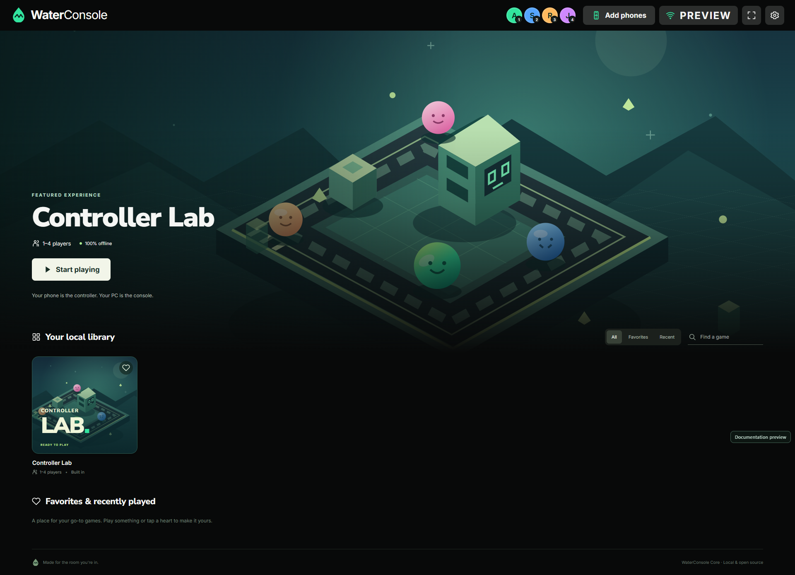
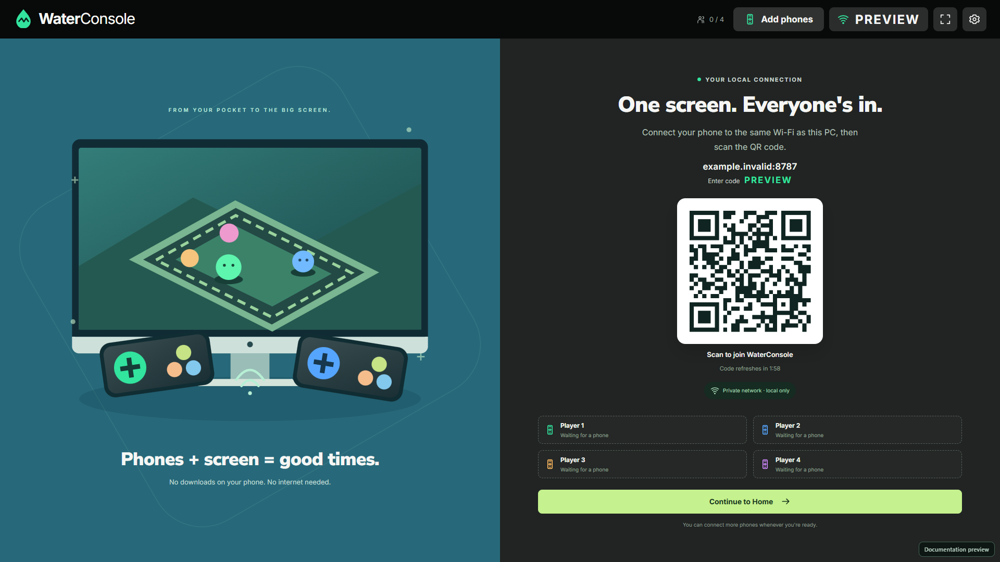
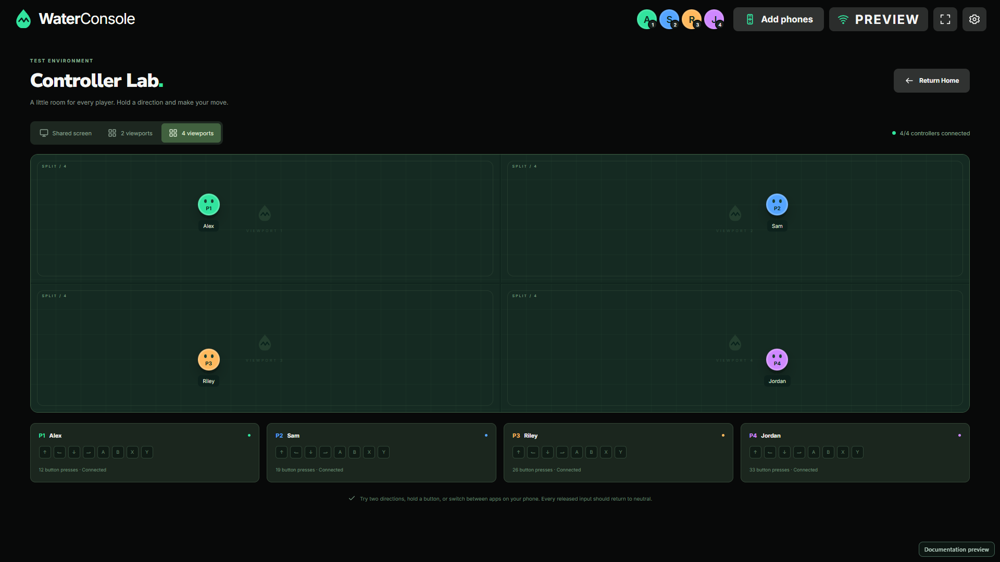
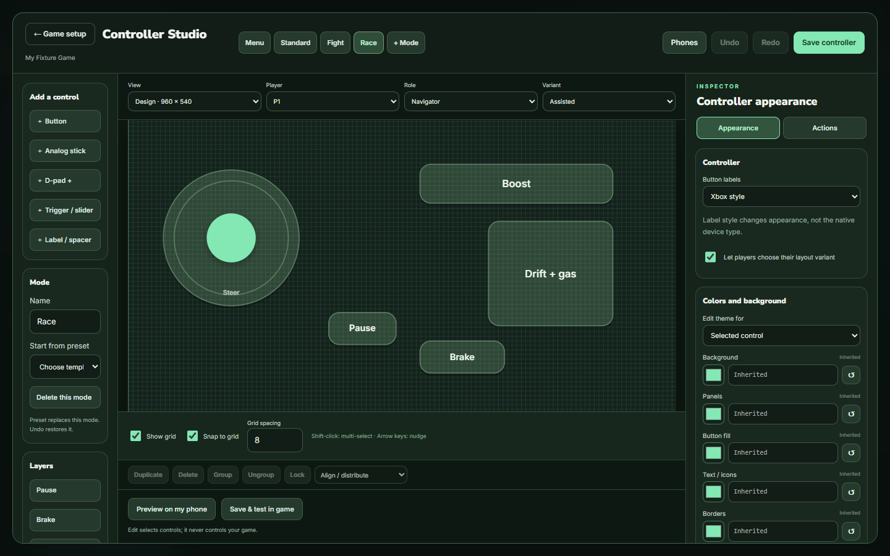

Scan. Approve. You're in.
Join from a phone browser using the PC's QR code. Every new device needs your approval before it can control anything.
Your PC is the console.
Your phones are the controllers.
A local console foundation for the screen you already own
and the friends right beside you.


A familiar home for your local library. Controller Lab is included.
THE COUCH IS THE LOBBY
No extra controllers to buy. Open the console, connect your
phones,
and start exploring what you can build together.
Join from a phone browser using the PC's QR code. Every new device needs your approval before it can control anything.
Fullscreen controls, multi-touch, a draggable directional pad, and optional vibration. No separate phone app needed.
Up to four approved phones, each with its own player slot. Reconnects recover the slot and reset input to neutral.
Browse your local library, keep favorites, return to recent items, and navigate with a phone, mouse, or keyboard.
The console runs on your Windows PC over your trusted LAN. The core works offline after setup, with no cloud account.
Add an installed game, crop its cover and banner, and design your phone controller visually. Source and AI extensions stay available.
MEET CONTROLLER LAB
Before building a game adapter, make sure every controller feels right. Controller Lab gives your inputs somewhere to land.
Lab is a diagnostic playground. It doesn't add split-screen to other games.

YOUR NEXT GAME NIGHT STARTS HERE
Install the Windows app and open it on the screen you'll share. The local server starts with the console.
Connect the PC and phones to your trusted Wi-Fi or hotspot. Scan the lobby QR and approve each phone on the PC.
Tap “Enter controller” on your phone for fullscreen. Open Controller Lab and give your controls a spin.
Android Chrome is the primary phone browser. Fullscreen and vibration depend on browser support. Use a trusted private network: local HTTP traffic is not encrypted.
Setup guideNEW IN 0.3 · NO PAID AI REQUIRED
Add your installed game, crop its cover and banner, then arrange controls, colors and linked actions in Controller Studio. Specialized source integrations remain available.

OPEN SOURCE, FROM THE START
Add your own installed games without code or a paid AI subscription. Controller Studio lets you shape buttons, link actions, choose icons and tune colors for every player. Only Controller Lab is bundled.
Use the contributor guide yourself, or give it to Codex or Claude Code. The docs explain the contracts, input safety, artwork, and checks a new integration needs.
No commercial games or native game adapters are bundled. Install and integrate games separately.
ONE LOCAL CONSOLE. A SHARED START.
Free to download. Free to change. Free to build on.
Version 0.4.4 · Visual input binding, personal phone layouts, live colors and landscape controls.
Requirements & installationA FEW GOOD QUESTIONS
Yes. WaterConsole Core is published under the MIT license. You can use, modify, and share it under that license. Games you choose to integrate keep their own licenses.
Controller Lab is the only built-in entry in the public edition. It tests controllers and viewports. Add an installation you are entitled to use through Add Game, or build a specialized source adapter. See the game integration guide.
You need internet to download the app and any optional development tools. Once installed, the console, local pairing, and Controller Lab work on your trusted local network without internet. Third-party games and AI tools may have their own online requirements.
No separate phone app is needed. Open the local controller in your browser. Vibration is opt-in and uses your browser's Vibration API where supported. Touch feedback is distinct from game rumble; native rumble needs a supported gamepad callback and optional PC gamepad tools.
Each game's player limit and display modes still apply. The console supports four phone slots. Controller Lab's two- and four-view layouts demonstrate the foundation; they don't modify other games.
Check that the PC and phone are on the same trusted network, use the current lobby address, and approve the phone on the PC. Guest Wi-Fi, client isolation, VPN routing, or firewall rules can block local access. The troubleshooting guide walks through these checks.
KEEP THE COUCH OPEN
Contribute a fix, share an idea, or support development.
Your
support is optional. Playing together stays free.